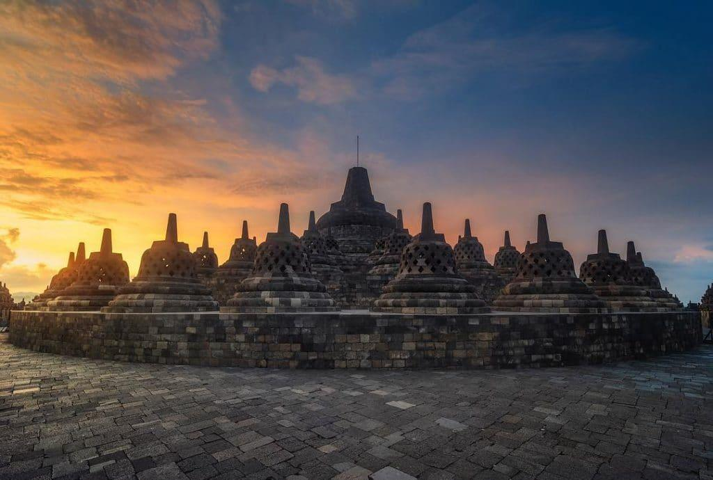

Pembangunan
Tidak ditemukan bukti tertulis yang menjelaskan siapakah yang membangun Borobudur dan apa kegunaannya. Waktu pembangunannya diperkirakan berdasarkan perbandingan antara jenis aksara yang tertulis di kaki tertutup Karmawibhangga dengan jenis aksara yang lazim digunakan pada prasasti kerajaan abad ke-8 dan ke-9. Diperkirakan Borobudur dibangun sekitar tahun 800 masehi.

VIDEO BOROBUDUR:
Borobudur
Borobudur (bahasa Jawa: ꦕꦤ꧀ꦝꦶꦧꦫꦧꦸꦝꦸꦂ, translit. Candhi Barabudhur) adalah sebuah candi Buddha yang terletak di Borobudur, Magelang, Jawa Tengah, Indonesia. Candi ini terletak kurang lebih 100 km di sebelah barat daya Semarang, 86 km di sebelah barat Surakarta, dan 40 km di sebelah barat laut Yogyakarta. Candi berbentuk stupa ini didirikan oleh para penganut agama Buddha Mahayana sekitar tahun 800-an Masehi pada masa pemerintahan wangsa Syailendra. Borobudur adalah candi atau kuil Buddha terbesar di dunia, sekaligus salah satu monumen Buddha terbesar di dunia.
Monumen ini terdiri atas enam teras berbentuk bujur sangkar yang di atasnya terdapat tiga pelataran melingkar, pada dindingnya dihiasi dengan 2.672 panel relief dan aslinya terdapat 504 arca Buddha.
Letak Borobudur
Terletak sekitar 40 kilometer barat laut dari Kota Yogyakarta, Borobudur terletak di atas bukit pada dataran yang dikeliling dua gunung kembar
Social Media
Tiga Candi Serangkai
Selain Borobudur, terdapat beberapa candi Buddha dan Hindu di kawasan ini. Pada masa penemuan & pemugaran di awal abad ke-20 ditemukan candi Buddha lainnya yaitu Candi Mendut dan Candi Pawon yang terbujur membentang dalam satu garis lurus.Awalnya diduga hanya s uatu kebetulan, akan tetapi berdasarkan dongeng penduduk setempat, dulu terdapat jalan berlapis batu yang dipagari pagar langkan di kedua sisinya yang menghubungkan ketiga candi ini.
Danau Purba
Borobudur di tengah kehijauan alam dataran Kedu. Diduga dulu kawasan di sekeliling Borobudur adalah danau purba. Tidak seperti candi lainnya yang dibangun di atas tanah datar, Borobudur dibangun di atas bukit dengan ketinggian 265 m (869 ft) dari permukaan laut dan 15 m (49 ft) di atas dasar danau purba yang telah mengering.Keberadaan danau purba ini menjadi bahan perdebatan yang hangat di kalangan arkeolog pada abad ke-20; dan menimbulkan dugaan bahwa Borobudur dibangun di tepi atau bahkan di tengah danau.
Tiga Candi Serangkai (2)
Selain Borobudur, terdapat beberapa candi Buddha dan Hindu di kawasan ini. Pada masa penemuan & pemugaran di awal abad ke-20 ditemukan candi Buddha lainnya yaitu Candi Mendut dan Candi Pawon yang terbujur membentang dalam satu garis lurus.Awalnya diduga hanya s uatu kebetulan, akan tetapi berdasarkan dongeng penduduk setempat, dulu terdapat jalan berlapis batu yang dipagari pagar langkan di kedua sisinya yang menghubungkan ketiga candi ini.